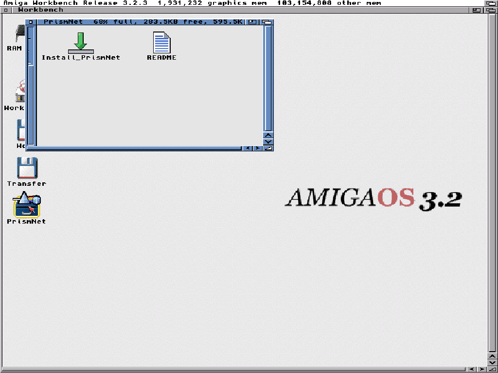
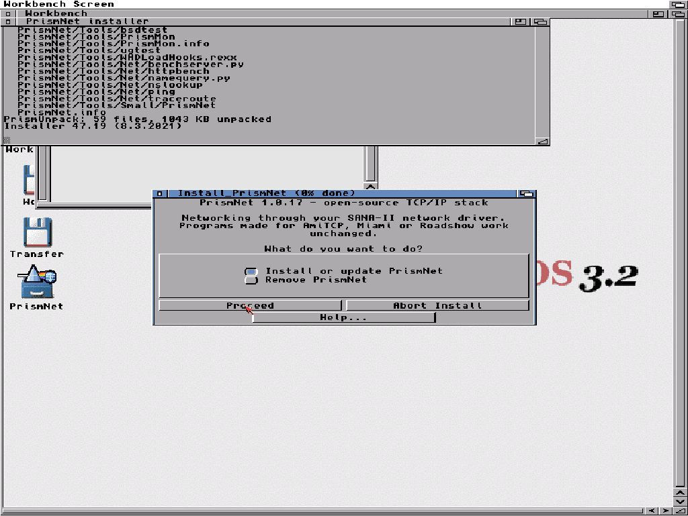
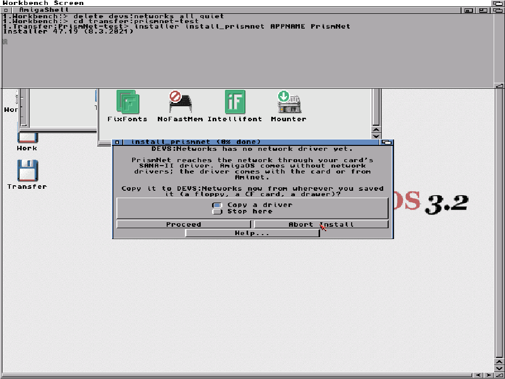
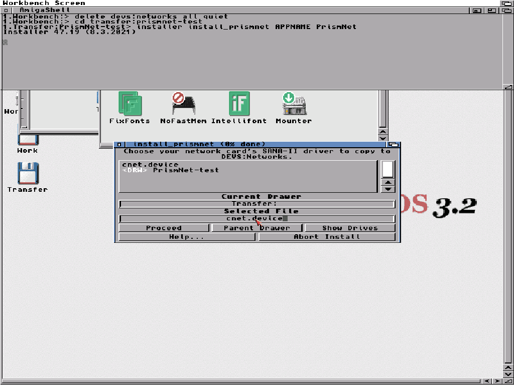
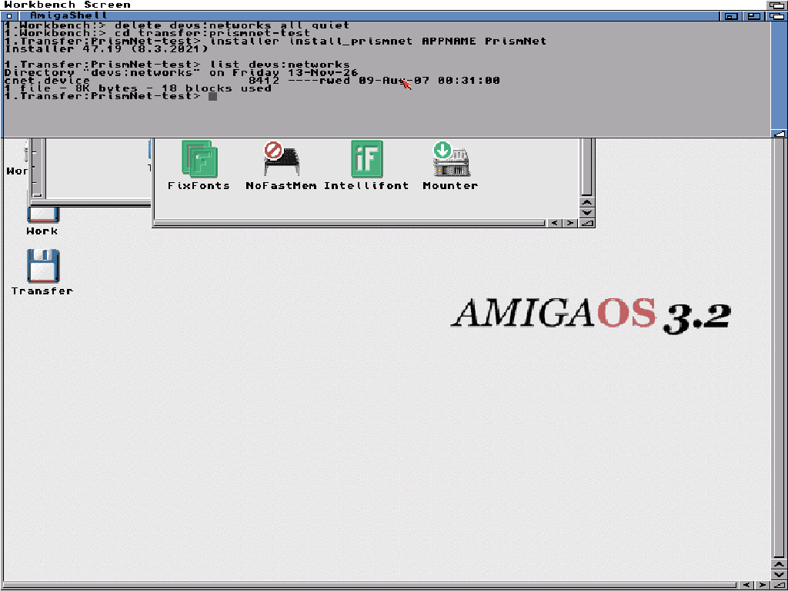
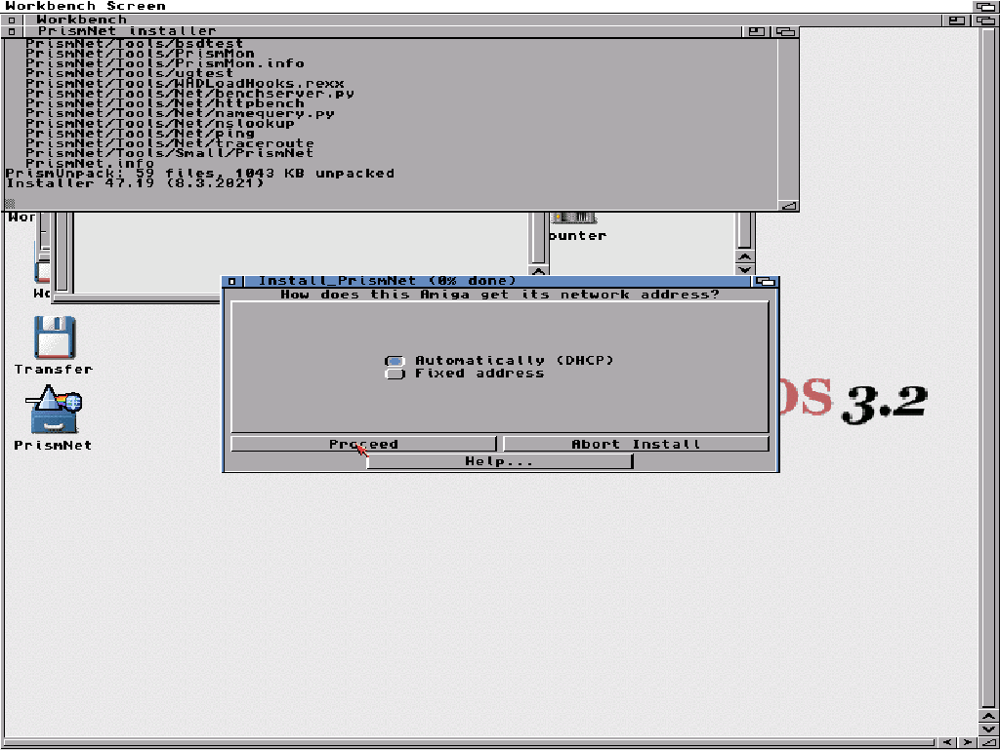
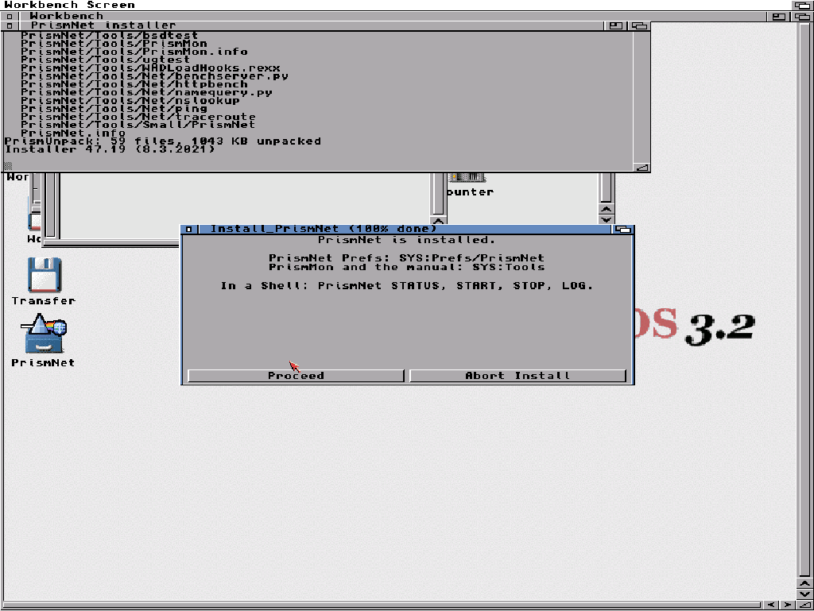
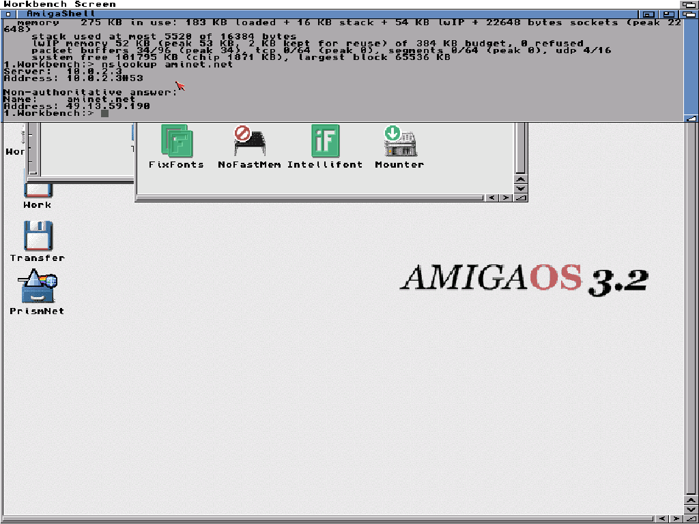
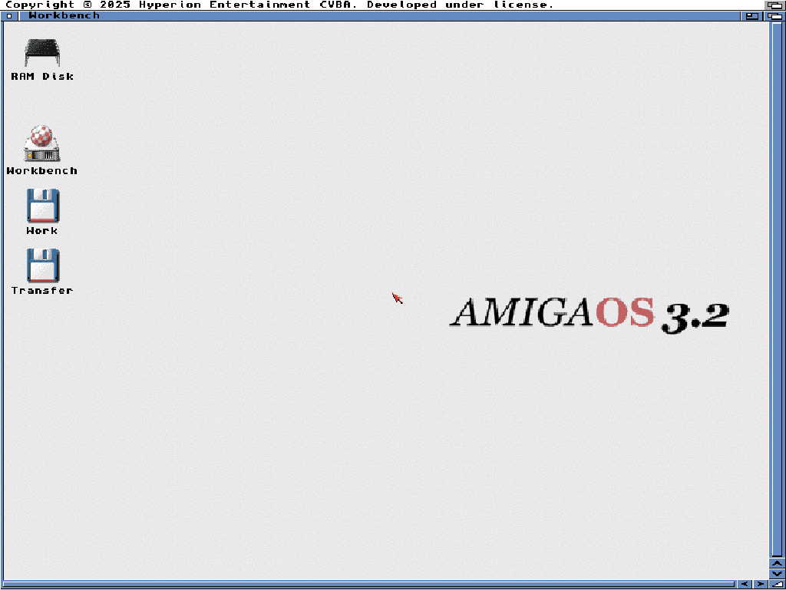

Installing PrismNet from its release ADF on a clean AmigaOS 3.2.3, recorded in WinUAE on 13 November 2026. The machine had just been installed from floppies (that part is in the PrismRTG repo's guide), so it starts with no network driver at all.
PrismNet-1.0.18.adf (or the .lha) from the GitHub releasecnet.device for PCMCIA NE2000 cards, x-surf.device for the X-Surf, scsidayna.device for the DaynaPORTInsert PrismNet-1.0.18.adf and double-click Install_PrismNet. It unpacks its files (the list stays in a window behind) and opens the Installer in Intermediate User. Click Proceed With Install, Proceed, and keep Install or update PrismNet.


Then, page by page:
SYS:Tools: Proceed.DEVS:Networks. The installer creates it and, finding no driver there, offers Copy a driver. Pick the driver file wherever you saved it (here Transfer:cnet.device) and it is copied into DEVS:Networks. Then unit 0.amiga or type your own.



Done: PrismNet's settings are in SYS:Prefs/PrismNet, PrismMon and the manual in SYS:Tools, and in a Shell PrismNet STATUS, START, STOP and LOG control it.

In a Shell, PrismNet STATUS shows the stack's memory and connections, and a name lookup proves DHCP and DNS work. Here nslookup aminet.net answered through the DNS server DHCP handed out (10.0.2.3 on WinUAE's slirp network).

A cold reboot brings PrismNet up in the background with Workbench.
